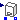
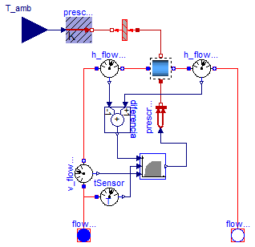

| Name | Description |
|---|---|
|  Caldera | Modelo de caledra simplificado |
| Catalogo con las especificaciones de distintas calderas | |
| Ejemplos de funcionamiento de calderas |

| Type | Name | Default | Description |
|---|---|---|---|
| Especificaciones | espec | Soltermica.Calderas.Catalogo... | Especificaciones del equipo |
| Medium | medium | Modelica.Thermal.FluidHeatFl... | Fluido de trabajo |
| CelsiusTemperature | TempReg | 40 | Temperatura de consigna de salida de la caldera [degC] |
| Temp_K | T_ini | 293.15 | Temperatura inicial del conjunto de la caldera [K] |
| Type | Name | Description |
|---|---|---|
| FlowPort_a | flowPort_a | Entrada de agua fria |
| FlowPort_b | flowPort_b | Salida de agua caliente |
| input RealInput | T_amb | Temperatura ambiental que rodea a la caldera |
model Caldera "Modelo de caledra simplificado"
Modelica.Thermal.FluidHeatFlow.Interfaces.FlowPort_a flowPort_a(
final medium=medium) "Entrada de agua fria";
Modelica.Thermal.FluidHeatFlow.Interfaces.FlowPort_b flowPort_b(
final medium=medium) "Salida de agua caliente";
Soltermica.ClasesBasicas.VolumenesControl.VolumenControlUnico
volumenControlUnico(
final medium=medium,
final T_ini=T_ini,
final dP_nom=espec.dp_nom,
final cV_nom=espec.V_flow_nom,
final Volumen=espec.V_cald);
Modelica.Thermal.FluidHeatFlow.Sensors.V_flowSensor v_flowSensor(
final medium=medium);
Modelica.Thermal.FluidHeatFlow.Sensors.TSensor tSensor(
final medium=medium);
Modelica.Thermal.HeatTransfer.PrescribedHeatFlow prescribedHeatFlow1;
Soltermica.ClasesBasicas.ControlesEquipos.Control_Caldera control_Caldera(
final medium=medium,
final caudalMinACS=espec.V_flow_min,
final rendimientoInstantaneo=espec.RendimientoInstantaneo,
final GradoModulacionMin=espec.ModulacionMinima,
final PotenciaNominal=espec.PotenciaNominal,
final PCCombustible=espec.PCCombustible,
final TempRegulacion=TempReg);
Modelica.Blocks.Interfaces.RealInput T_amb
"Temperatura ambiental que rodea a la caldera";
parameter Soltermica.Calderas.CatalogoEquipos.Especificaciones espec=Soltermica.Calderas.CatalogoEquipos.Especificaciones()
"Especificaciones del equipo";
parameter Modelica.Thermal.FluidHeatFlow.Media.Medium medium=Modelica.Thermal.FluidHeatFlow.Media.Medium()
"Fluido de trabajo";
parameter Modelica.SIunits.CelsiusTemperature TempReg=40
"Temperatura de consigna de salida de la caldera";
parameter Modelica.SIunits.Temp_K T_ini=293.15
"Temperatura inicial del conjunto de la caldera";
Soltermica.ClasesBasicas.TransferenciaCalor.TransmisionCalor1D_MasaTermica
transmisionCalor1D_MasaTermica(
U_a=5000 "Coeficiente estimado conveccion liquido",
final A=espec.S_cald,
final C=espec.CapacidadTermicaVacio,
U_b=20 "Coeficiente estimado de conveccion natural con el ambiente");
Modelica.Thermal.HeatTransfer.PrescribedTemperature prescribedTemperature;
Modelica.Thermal.FluidHeatFlow.Sensors.H_flowSensor h_flowSensor_in(
final medium=medium);
Modelica.Thermal.FluidHeatFlow.Sensors.H_flowSensor h_flowSensor_out(
final medium=medium);
Modelica.Blocks.Math.Add diferencia(k2=-1);
equation
connect(flowPort_a, v_flowSensor.flowPort_a);
connect(flowPort_a, tSensor.flowPort);
connect(prescribedHeatFlow1.port, volumenControlUnico.puertoInt);
connect(v_flowSensor.y, control_Caldera.V_flow_in);
connect(tSensor.y, control_Caldera.T_in);
connect(T_amb, prescribedTemperature.T);
connect(prescribedTemperature.port, transmisionCalor1D_MasaTermica.port_b);
connect(transmisionCalor1D_MasaTermica.port_a, volumenControlUnico.puertoExt);
connect(control_Caldera.potenciaTeorica, prescribedHeatFlow1.Q_flow);
connect(h_flowSensor_in.flowPort_b, volumenControlUnico.flowPort_a);
connect(v_flowSensor.flowPort_b, h_flowSensor_in.flowPort_a);
connect(volumenControlUnico.flowPort_b, h_flowSensor_out.flowPort_a);
connect(h_flowSensor_out.flowPort_b, flowPort_b);
connect(h_flowSensor_out.y, diferencia.u1);
connect(h_flowSensor_in.y, diferencia.u2);
connect(diferencia.y, control_Caldera.Pot_Real);
end Caldera;